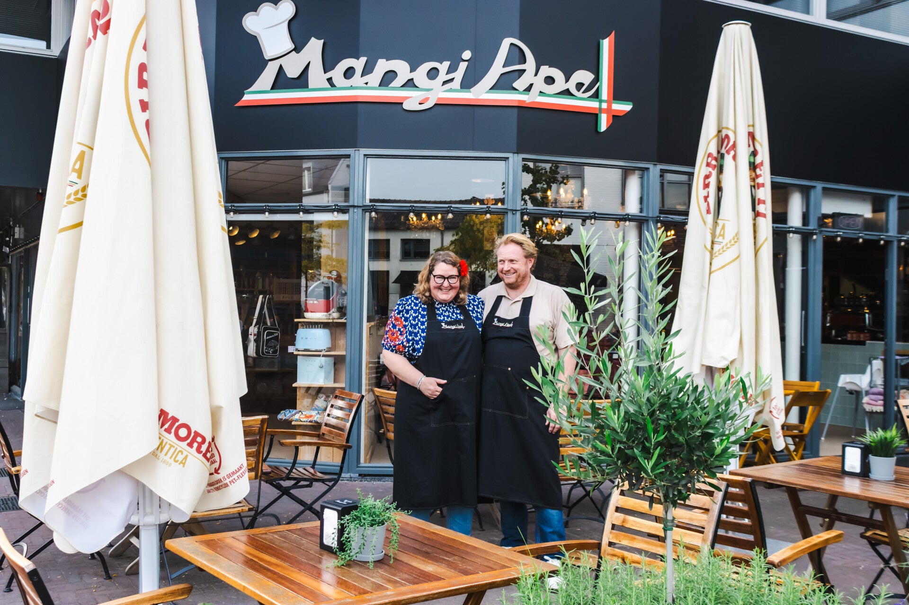
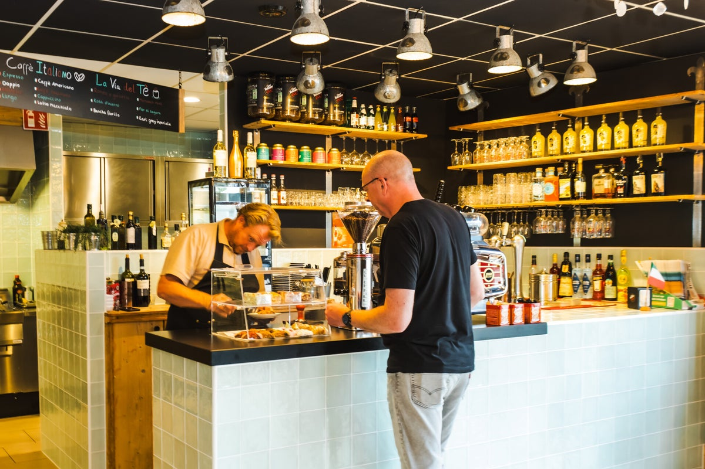
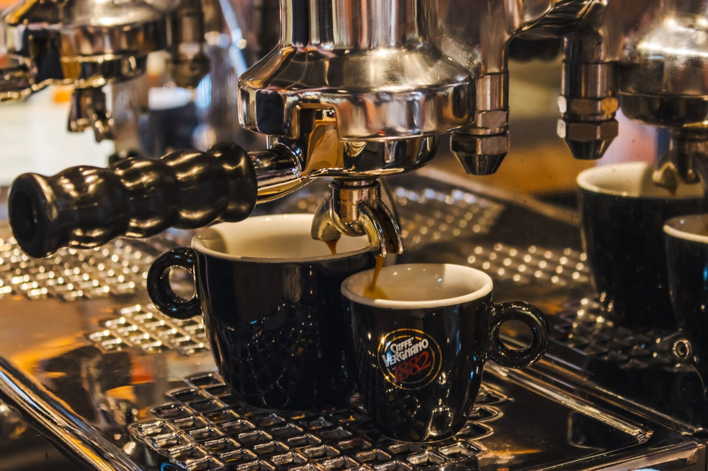
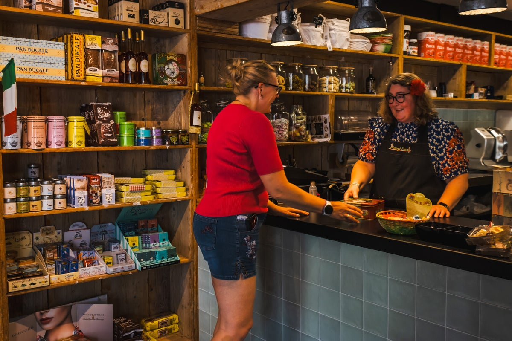
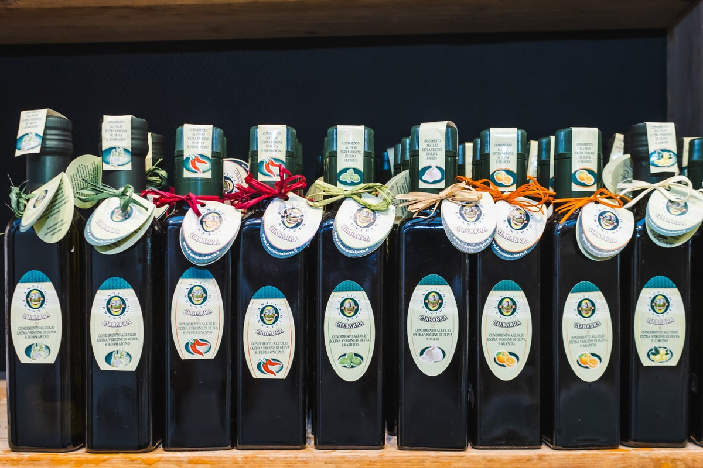
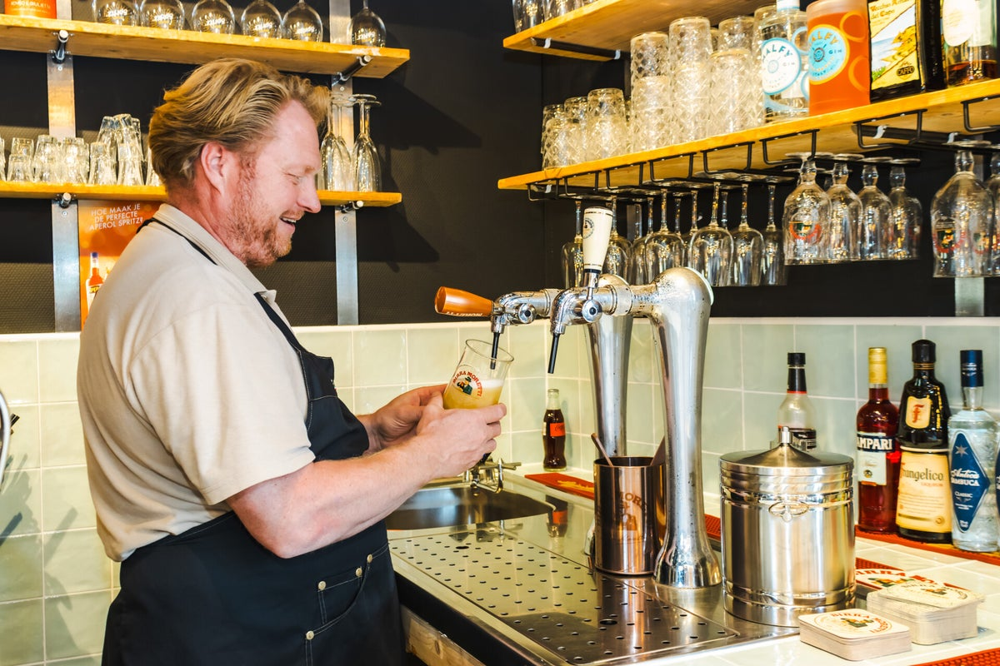
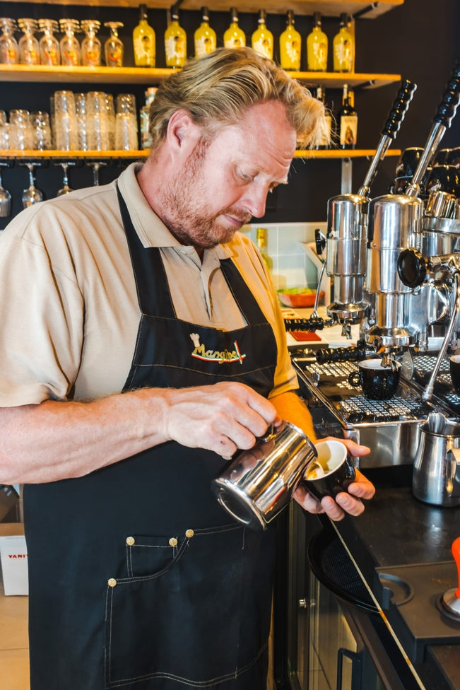

Italiaanse winkel & Cantina in Leusden
Ons kleine stukje Italië in Leusden
Echte espresso, vers belegde panini, antipasti en een goed glas wijn. En alles wat je bij ons proeft, neem je in de winkel mee naar huis.


Blijf gerust even zitten
In onze Cantina, zeg maar ons Italiaanse proeflokaal, drink je echte espresso, proef je dolci zoals in Rome en eet je vers belegde broodjes met ingrediënten die je ook in Italië vindt.
Later op de dag serveren we antipasti, schenken we een goed glas wijn en staat er vaak iets warms klaar voor een avondhap zoals bij nonna thuis. Een klein momentje voor jezelf of samen met vrienden: bij ons voelt het alsof je even in Italië bent.
- 24 zitplaatsen binnen
- ±30 plekken op het terras
Kleinschalig, huiselijk en persoonlijk. We organiseren regelmatig wijnproeverijen en avonden met een speciaal dinermenu, en je kunt de ruimte ook afhuren voor besloten bijeenkomsten.
Alles wat we in de Cantina serveren, kun je voor een groot deel ook in de winkel kopen: van olijfolie en pasta tot kazen, vleeswaren en zelfs het servies.
Bel om een tafel te reserverenBegin je theateravond op z’n Italiaans
Niets is leuker dan je avond in het AFAS Theater te starten in Italiaanse sferen. Geniet van een ontspannen borrel met antipasti of kies voor ons speciaal samengestelde theatermenu.
- Slechts 800 meter van het AFAS Theater, op het horecaplein De Biezenkamp
- Parkeren is hier nog steeds gratis
- Op donderdag t/m zaterdag open tot 21:00, de keuken sluit om 20:00
We hebben een beperkt aantal plaatsen, dus reserveer telefonisch en vermeld dat je een theatergast bent. Dan zorgen wij dat je heerlijk eet, ontspannen tafelt en op tijd bent voor de voorstelling.
Bel en reserveer: 033 285 74 22AFAS Theatermenu
3 gangen € 34,50 p.p.
Voor
7 pittige scampi’s gepelde garnalen in knoflook-rode peper boter
of
Funghi trifolati gebakken champignons met Italiaanse kruiden, afgeblust met marsala
Hoofd
Linguine bolognese huisgemaakte ei-pasta met traditionele bolognesesaus
of
Gnocchi ricotta pomodori lauwwarme aardappelpasta met tomaat, ui en romige ricotta
Dessert
Huisgemaakte tiramisu traditioneel, limoncello of kersen, met een pittige kop Vergnano koffie
Neem Italië mee naar huis
In onze delicatessenwinkel vind je authentiek Italiaanse producten die we met liefde hebben uitgezocht, veel ervan zelf meegenomen uit Italië. Van dolci, chocolade en snoepjes tot crostini en (glutenvrij) pizzameel.
Olijfolie, alleen bij ons
De olijfolie van Antica Frantoio Ciabarra importeren we zelf. Ook hebben we regelmatig verse truffels en truffelproducten van Il Mondo del Tartufo.
Wijn met Walrave
Samen met de Leusdense wijnkoperij Walrave stelden we een mooi Italiaans wijnassortiment samen.
Keuken en cadeau
We zijn geselecteerd dealer van SMEG keukenapparatuur in zeven kleuren: kom ze zien of zelf uitproberen. Verder de zeshoekige moka-pot van Bialetti, olijfhouten planken, schalen en bakjes van Bowls & Dishes en handbeschilderd Italiaans servies.
Cadeaupakketten
Voor familie, vrienden of collega’s, met zorg samengesteld en rechtstreeks uit Italië.
Bestellen en afhalen
Verse broodjes, borrelplanken, maaltijden of een cadeaupakket? Online bestellen kan (nog) niet, maar bellen, mailen, appen of langskomen werkt altijd.


Waarom we MangiApe heten
Mangiare eten
Ape honingbij, en de naam van onze kleine Italiaanse foodtruck van Piaggio
Zo werd MangiApe ‘de etende bij’.
We nemen Italië ook mee naar jou
Met onze Piaggio foodtrucks bakken we pizza’s uit de houtoven, schenken we Italiaanse koffie, tappen we bier en maken we scroppino’s. Op bruiloften, verjaardagen, feestjes en evenementen.
Klein, groot, intiem of uitbundig: we verzorgen het alsof jij bij ons aan tafel zit. Met aandacht, eenvoud en heel veel smaak en gezelligheid. Ook koken op locatie is mogelijk.

Vraag de mogelijkheden aan
Ons verhaal
Wij zijn Ceciel en Geertjan Smits. Onze liefde voor Italië begon met het heerlijke eten, de mooie reizen en vooral de gezelligheid aan tafel.
- 2013
We starten een Italiaans cateringbedrijf met eigen Piaggio foodtrucks, pizza’s uit de houtoven en koken op locatie, op bruiloften, feestjes en evenementen door heel Nederland.
- 2019
Eind 2019 openen we naast de catering een winkel in Leusden, met Italiaanse delicatessen, cadeaus en producten die we zelf graag gebruiken.
- 2023
In de zomer verhuizen we naar een ruimer pand, met twee keer zoveel winkelruimte én een Italiaanse bar: de Cantina.
MangiApe staat voor de Italiaanse manier van leven: eten, delen en genieten. Samen zijn, en aandacht voor eten en elkaar.
“Authentiek Italiaans in alle opzichten, 100% aanrader! Heerlijke smaken, de mooiste producten en unieke cadeautjes in de aangrenzende winkel. Uiterst vriendelijke eigenaren die het beste uit Italië voor je verzameld hebben.”
Zin om zelf aan de slag te gaan? We delen ook graag onze recepten, zoals pizzadeeg en de Pizza del Ape.
Kom langs
Biezenkamp 4a-b, 3831 JA Leusden. In het gezellige centrum, op het horecaplein De Biezenkamp.
Winkel
- Dinsdag t/m donderdag
- 09:00 – 18:00
- Vrijdag
- 09:00 – 19:00
- Zaterdag
- 09:00 – 17:00
Cantina
- Dinsdag
- 09:00 – 17:00
- Woensdag
- 10:30 – 17:00
- Donderdag t/m zaterdag
- 10:30 – 21:00
Keuken sluit om 20:00.
Zondag en maandag zijn we gesloten, dan eten we gezellig thuis aan onze eigen keukentafel.
- Bellen033 285 74 22
- WhatsApp06 11 08 03 95
- Maileninfo@mangiape.nl
- Volgen@mangiape op Instagram
Volg ons voor nieuwe broodjes, wijnproeverijen, winkelvondsten en zonnige Italiaanse momenten tussendoor. En als je iets van ons deelt, vinden we dat stiekem heel leuk.